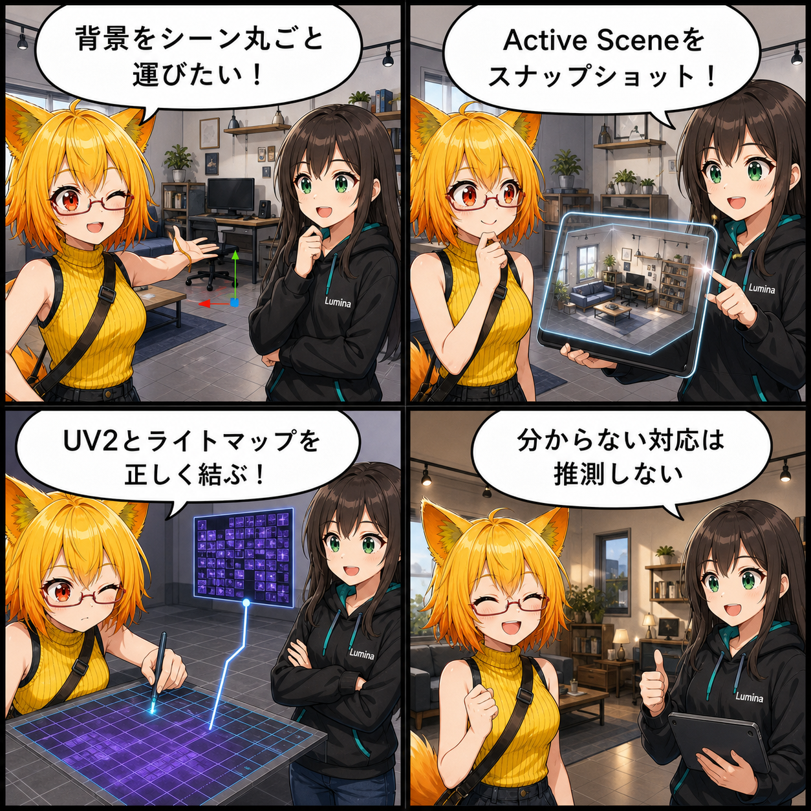

背景を丸ごと運んで、焼き込んだ光まで持ち帰る
2026-08-11 の開発日記では、Unityの背景SceneをVBG 2.0へ変換するとき、配置だけでなくベイク済みの光までViewerへ運ぶ改善を取り上げます。Active Scene全体を非破壊のスナップショットとして書き出し、Unityが確定したLightmap用UVとRendererの対応を保つことで、背景の明るさや陰影を元のSceneへ近づけます。
main ブランチで、集計期間内に記録された3コミットをもとにしています。4コマ内の会話や見せ方には、読み物として分かりやすくするための演出があります。集計期間は 2026-08-10 03:00:00 JST から 2026-08-11 02:59:59 JST までです。
集計終了時点の最終HEADは fe6fbd2（「Fluid Flow 2表面塗装・濡れ仕様を追加」）で、対象コミットは 3件 でした。期間全体では69ファイル、9,049行追加・269行削除です。確認時点では多数の未コミット差分もありましたが、集計期間内の実装と確定できないためこの記事の実績には含めていません。
今日の主題：背景を「開いているScene」から書き出す
背景は単一のPrefabやFBXだけでできているとは限りません。複数のRoot、Scene上で調整したTransform、Material、Camera、Light、RenderSettings、Reflection Probe、Light Probe、そしてベイク済みLightmapが組み合わさって、最終的な見た目になります。
今回追加されたActive Sceneモードは、現在開いているSceneの全Rootを一時CloneしたスナップショットからVBG 2.0を生成します。元のScene Objectを移動したり、親子関係を変えたり、Prefabへ適用したりせず、Unityがすでに解決した状態を変換へ渡す設計です。DontSave の一時オブジェクトを除外し、元Sceneを変更しないことを確認するテストも追加されました。
ベイク光には、専用のUVが必要
ベイク済みLightmapは、画像を持ち込むだけでは正しく貼れません。各RendererがどのLightmapを使うかに加え、Meshのどの位置へ光を対応させるかを示すSecondary UV、Unityでいう Mesh.uv2 が必要です。
外部Unity Editor Converterでは、ModelImporter適用後の Mesh.uv2 を scene.glb の TEXCOORD_1 へ保存するようになりました。これにより、Unityの「Generate Lightmap UVs」で生成されたUVも含め、Lightmap Atlasと同じ座標をViewerへ持ち込めます。VBG側には lightmapUvMode が追加され、正確なUVを保持できた mesh と、保持できなかった fallback を区別します。
再現できない光を、推測で作らない
RuntimeのUnityPackage Converterでは、Unity Editorが生成したUV2を常に正確に再構築できるわけではありません。その場合は別のUVを推測して既存Lightmapへ結び付けたり、ベイク光をRealtime Lightへ置き換えたりせず、fallback として扱います。
利用できるBaked Light Probe、Ambient、Reflectionへ安全に退避し、直接Lightmapを適用するのは対応するUVを確認できたRendererだけです。「それらしく見せる」ための推測が、別の場所へ影を貼ってしまう誤再現を避けるための境界です。
実データを意識した回帰確認
今回の変更には、Active SceneのRoot TransformとActive状態を保つこと、Secondary UVをGLBへ保持すること、Camera情報を運ぶことを確かめるEditorテストが追加されました。Runtime側にも、背景の変換・読み戻しで複数のLightmap SetとRenderer binding、Skybox resource、Scene上のTransform overrideを検査する回帰処理が加わっています。
ほかにも進んだこと
同じ集計期間には、撮影カメラでURPのDepth Primingを使う際の描画修正が入り、共通Lit／Toon ShaderへDepthOnly Passが追加されました。また、VAB／VBG上の表面塗装・濡れ・汗表現をどう扱うかについて、Fluid Flow 2連携、Paint UV、保存境界、性能、フォールバックを整理した2本の仕様書も追加されています。これらは仕様策定であり、未コミットの実装内容は今回の実績へ含めていません。
4コマの裏話
4コマでは、ろひが複数Rootで組まれた背景Sceneを丸ごと運びたいと相談し、ルミナがActive Sceneのスナップショットを提案します。続いてLightmapとUV2を正しく結び、最後は「確認できない対応を推測しない」という今回の安全策で締めます。
今日のまとめ
2026-08-11の記事対象期間では、VBG背景変換が単一Prefab中心の入口から、Unityで完成したActive Scene全体を扱う入口へ広がりました。配置、環境、Probe、Lightmap、そしてLightmap用UVの対応をひとつの変換へまとめています。
正確なUVがある場合だけベイク光を直接再現し、ない場合は安全な照明情報へフォールバックする。背景の見た目を守るために、何を運べたかだけでなく、何を推測しないかも明確になった改善です。
本日のひとこと： 光は画像だけじゃない。貼る場所までそろえて、やっと引っ越せる。